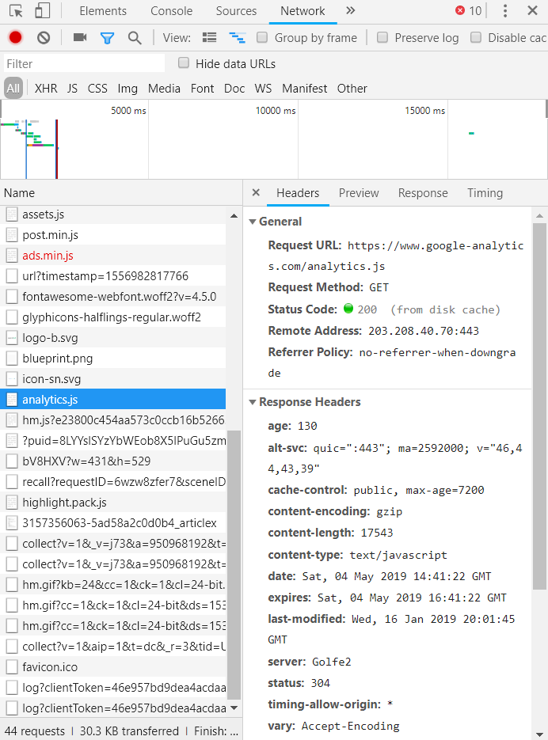
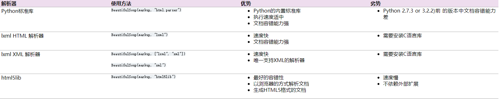

爬虫思路&requests模块使用
爬虫思路：
我们平时是如何上网的，大概就是这样：
①点开目标网址→→[可选：登录/回复]→→②浏览全页筛选出价值内容→→③如果很喜欢，还会拷贝下载回来
所以爬虫归结起来也就这几步：
构造目标网址（重点）
发起请求（request），相当于点开网页。
获取网页内容（坑）。
定制筛选器，对内容进行筛选（重点）。
把爬取结果保存到容器里。
F12审查元素：
这是浏览器自带的工具，提供抓包和检查网页源码的功能，供使用者分析网页。也是学爬虫必须要学会的工具。
使用非常简单，打开任一浏览器（google chrome），按F12或鼠标右键检查。
选择Element是查看网页源码，是树结构的html文档，里面有要爬取的内容。
选择Network是查看本地和服务器端交互的包，可以从中获取目标网址和headers。
requests模块：
简单使用：
主要介绍两种方法：get和post
get，就是本地向服务器索取的意思，服务器检查请求头（request headers）后，如果觉得没问题，就会返回信息给本地。1
r = requests.get(url,**args)#返回一个Response对象，我们可以从这个对象中获取所有我们想要的信息
post，就是本地要向服务器提交一些数据的意思，服务器还是会检查请求头，如果提交的数据和请求头都没问题，就会返回信息给本地。1
r = requests.post(url,**args)#也是返回Response对象
参数详解
get和post方法中有许多参数可以使用。
url：就是目标网址，接收完整（带http）的地址字符串。
headers：请求头，存储本地信息如浏览器版本，是一个字典。
data：要提交的数据，字典。
cookies：cookies，字典。
timeout：超时设置，如果服务器在指定秒数内没有应答，抛出异常，用于避免无响应连接，整形或浮点数。
params：为网址添加条件数据，字典。1
2
3payload = {'key1': 'value1', 'key2': 'value2'}
r = requests.get("http://httpbin.org/get", params=payload)
#相当于目标网址变成了http://httpbin.org/get?key2=value2&key1=value1
proxies：ip代理时使用，字典。
Response对象使用
从这个对象中获取所有我们想要的信息非常简单，毕竟爬虫要的数据主要就三种，html源码，图片二进制数据，json数据，Response对象一次性满足你三个愿望。
1 | r.encoding = 'ISO-8859-1' #指定r.text返回的数据类型，写在r.text之前。 |
还有一些很少用到的方法。
r.headers #返回服务器端的headers，字典。
r.status_code #返回连接状态，200正常。
小实例
requests 学完后就可以到处试试了.1
2
3
4
5import requests
r = requets.get('http://cn.python-requests.org/zh_CN/latest/')
with open('test.txt','w',encoding = 'utf-8') as file:#编码要对应
file.write(r.text)
#然后打开看看吧，是不是和F12看到的源码一样，只不过是把分支全展开了而已。
小提示：并不是所有网站的F12源码和爬取源码是一致的，网站有动态的，也有静态的；有防爬虫的，也有敞开大门任意爬的。
爬虫伪装&反“反爬”
有些网站是防爬虫的。总的来说有两种反爬策略，要么验证身份，把虫子踩死在门口；要么在网站植入各种反爬机制，让爬虫知难而退。
身份伪装
自定制 Requests Headers
- 修改user-agent：里面储存的是系统和浏览器的型号版本，通过修改它来假装自己是人。
- 修改referer：告诉服务器你是通过哪个网址点进来的而不是凭空出现的，有些网站会检查。
- 带上cookie，有时带不带饼干得到的结果是不同的，试着带饼干去“贿赂”服务器让她给你完整的信息。
- 详细数据可以F12捉个包来查看其Requests Headers

1 | headers = { |
headers数据通常用这两个即可，而且强烈推荐在爬虫中为每个request都配个user-agent，总比什么都没有好，加了也不会报错。
降低主IP访问频率
注意：这是针对长期的，大范围的爬虫的
有些网站会监视某个ip的访问频率和次数，一但超过某个阈值，就把你当作爬虫嫌犯赶出去了，这时就要想办法降低自己的存在感了。
休眠：爬一段时间后休息一会，不仅是为了自己的成功，也是为服务器着想。
ip代理：通过proxies参数来使用，前提是你要有ip，好的ip代理是要花钱的。
1 | time.sleep(60)#用python自带time模块的休眠功能 |
反 反爬（简析）
有些时候headers伪装什么的都做足了，可还是不能如愿以偿的获得正确的网页源码，要么缺，要么给你一堆毫不相关的东西，要么干脆让你红掉。
这说明要点不是伪不伪装的问题了，而是如何去解读网页的防爬机制从而推出解决方法。
就我目前遇到的主要有：
随机校验码：网页生成随机码，并要求你将其提交才接受你的请求（多用在登录验证中）。——这种校验码通常藏在网页源码中，先取再交是策略。
无序网址：网址后跟着一大串看不出规律的东西。——跟这种东西是没话说的，直接上selenium。
加密/杂乱的源码：你知道你要的东西就在那里，但是不知道怎样提取出来。——推理解谜，看脑子好不好使了。
动态加载：需要和页面交互才能获取更多信息，但是爬虫没法和它交互啊。——直接上selenium/手动捉包分析出目标链接
ajax技术：异步加载，网页内容分次加载，用爬虫只能得到第一次发出的html，导致信息不全。——上selenium/手动捉包分析出目标连接
补充：
selenium模块，模拟浏览器，强是强但是缺点是慢。
其实动态加载是为了方便用户点哪看哪的，但这也加大了爬虫的难度，因为很多信息因此被隐藏了起来。
BeautifulSoup解析网页
观察html，定制筛选器。
BeautifulSoup
把html文档转换为可定位的树结构，并提供索引，查找，修改功能。
标签索引
Beautiful Soup将复杂HTML文档转换成一个复杂的树形结构,每个节点都是一个对象,所有对象可以归纳为4种: Tag(标签) , NavigableString(字符串), BeautifulSoup(汤) , Comment(注释) , 知道就行.
BeautifulSoup类接收2个参数，第一个是html文档，第二个是解释器名，不写的话会自动选择。实例化后生成树结构，这里顺便附上各种解释器比较
1
2
3from bs4 import BeautifulSoup#注意不是直接导入beautifulsoup4
r = requests(......)
soup = BeautifulSoup(r.text,"html.parser")Tag（标签）类，包含该标签的所有内容，有多种方法用于索引元素/获取字符串（下面的tag，tag1指的是标签名）soup相当于最大的Tag对象。
定位：标签定位，previous_sibling/next_sibling
1
2
3
4tag2 = soup.tag1.tag2#定位到tag1下的tag2，并将其返回
tag4 = tag2.tag3.tag4，#标签对象可以继续向下定位
brother_tag = tag.previous_sibling/next_sibling#定位到该tag的上一个/下一个兄弟标签并将其返回
brother_tag = tag.previous_siblings/next_siblings#返回的是生成器，内含多个兄弟标签。索引： attrs,中括号索引
1
2dict1 = tag.attrs #以字典形式返回该tag下的元素及其对应值
lang = tag["lang"] #返回该tag下的lang属性的值，和字典索引用法一样获取字符串： string,strings,get_text()
1
2
3
4
5
6
7string = tag.string #仅限于夹在该tag的字符串，不包子的字符串，将每段字符串无缝连接后返回。
#如对`<a>A1<b>BB</b>A2<c>CC</c>A3<d>DD</d>A4</a>`使用a.string返回的是"A1A2A3A4"
strings = tag.strings #以生成器形式返回该tag下（**不包括子**）的**每段字符串**,供for循环使用。
strings = tag.stripped_strings #来先去除空行/空格再返回生成器
text = tag.get_text(分隔符,strip=False) #返回该tag下(包括所有子孙)的字符串，同一个tag下的字符串无缝连接，不同tag下字符串间以指定分隔符连接,strip默认为False，改为True时自动去除空行/空格。
以上的方法都是单次定位的，如果有多个符合标准的定位则以出现的第一个为准！！！
索引和获取字符串的方法一定是最后用的，因为它不再返回Tag对象！！！
find_all&find方法
它们能实现某个范围内的条件定位（不通过父子兄弟关系）,返回Tag对象供使用各种索引方法。
find()的作用是实现范围内的单次条件定位
find_all()的作用是以可迭代的形式返回范围内多个符合要求的定位，但是你要确保这个标签对你要的信息具有唯一性。
信息有时是分块的，这时定位也应分块，再对每个分块使用单次定位，下面是一个最常用的筛选器。
1 | for each in soup.find_all(.......):#通常第一句就是用find_all进行分块 |
find和find_all接收的参数是一样的，现以find_all为例：Tag.find_all(name,attrs,recursive,limit,text,*kwards)
name：标签名，定位到指定标签名的节点如’a’
想匹配多种标签名可传列表如[‘div’,’a’,’b’]
想自定标签名规则可传正则表达式如re.compile(规则)**kwards：其实是标签里的属性及其值，定位到有指定属性，属性值的标签,如.find_all(lang=’en’)
如果属性叫class，为防止与类的“class”冲突要在后面加下横线，如.find_all(class_=’sakura’)
可以设立多个条件如.find_all(class_=’sakura’,lang=’en’)
属性值可以用传正则表达式如.find_all(lang=re.compile(r’’))
recursive：默认True，检索当前tag下的所有子孙标签。设置为False时只检索当前tag下的直接子标签
limit：设置匹配上限，接收自然数，决定了有效定位的数量上限。
text：搜索文档中的字符串内容，返回匹配字符串的列表，可接收字符串，字符串列表和正则表达式（这个极少用到，通常不理）
！！记得常按F12看html源码啊